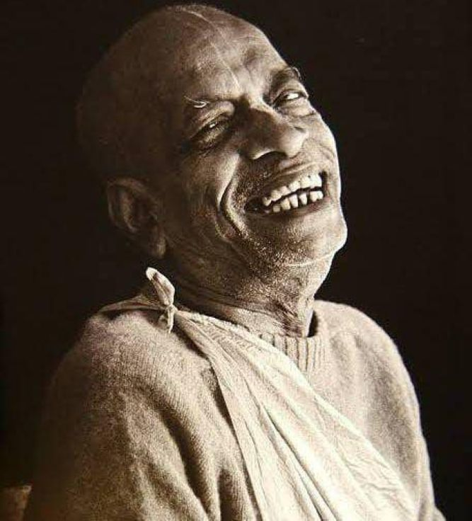

Why You Glorify Srila Prabhupāda, so much?
Posted on : 23rd April, 2025

Guest: Why You Glorify Srila Prabhupāda, so much as no one else exists for you isn't this sectarianism?
Admin: Else? Who else?
Guest: Krishna, Rama, other Vaishnava Gurus, current day ISKCON gurus...
Admin: I am not a born pure devotee and I am still not even a devotee, I don't know about you but I am not. For me and many of us present in this age of kali yuga specially in this time who is Bramha? Siva? Indra? Madhvacarya? Ramanujacarya? Nimbaditya? Visnuswami? Chaitanya mahaprabhu? The Goswamis? Bhakti vinode? Bhaktisiddhanta? Who is Jayapataka swami? Bhakticaru swami, Bhaktivikas swami, Tamal krsna swami, Gopal krsna swami? Lokanath swami? What is Vrindavan, Navadweep? What to speak of their lord.. For us Prabhupāds books! Lectures! They gave us everything.
Now that I can know that there is an incarnation of Lord named Chaitanya is because of Srila Prabhupāda. I could not even pronounce the names of Great acaryas, now I know their life and teachings because of whom? The current gurus of ISKCON are gurus because of whom? Without Srila Prabhupada who are they? Now I know them, respect them, I have accepted one of them as my Guru maharaj all this because of whom? I was not born in any Dhama, I was just a Bombay boy, now I am hankering for Sri Vrindāvan that's because of HDG A.C Bhaktivedānta Swami Srila Prabhupada...
Guest: But now Srila Prabhupada is not physically present now those are present they should be put forward.
Admin: Aree, when Lord Chaitanya, scriptures, great Acaryas Glorified Srila Prabhupada even before his advent, Lord Sri Krsna Glorified him by making him appear on the second day of his Janmāstami, great spiritual as well as material personalities glorified him when he was exhibiting his bhauma lila. Why!? Why!? Should I stop glorifying him when he has left only for a mortal vision, don't you read his books!? If not then start reading, SRILA PRABHUPADA IS THERE FOR 10,000 YEARS? NO! FOR-EVER HE IS ETERNAL.
Guest: But Institution..
Admin: Oh, you don't worry about it, this is not Gaudia Math. There will be absolutely no problem not in present never in future. Everyone will keep Srila Prabhupada in front always. You, me, gurus, GBC, other followers even a hired sweeper in the temple will Keep only Srila Prabhupada in front. And if we keep him in front we will run smooth, otherwise we will be divided and our spiritual potency will be lost. Thankyou very much.
Temple discussion, August 5, 2024